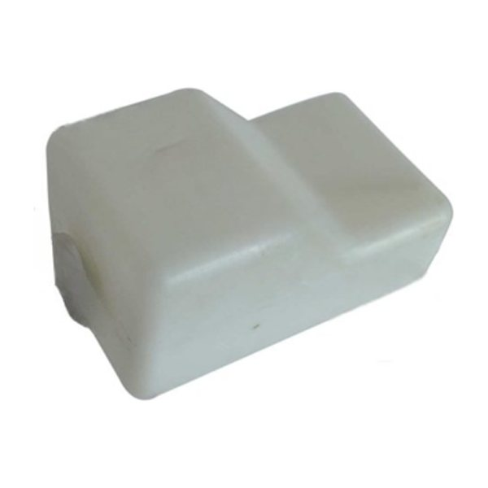

Available
Email for a quote
Komatsu 41029-401 Radiator Tank
| OEM part number | 41029-401 |
| Fits | Komatsu |
| Models / notes | FD20/25-16 |
| Category | Cooling |
| Type | Aftermarket replacement |
Send us the quantity you need and we'll reply with pricing, usually within 24 hours. Not the exact part? We can source it. Send the part number or a photo.